Monitoring
The dashboard shows requests answered, failed and empty answers, response time, EC2 CPU, disk, memory, the scheduled test pass rate and the alarm states. I chose these because they separate "the machine is unhealthy" (CPU, disk, memory) from "the product is broken" (failed or empty answers, low pass rate).

Eight alarms, all e-mailing me through SNS
Appendix A rows for a load balancer and RDS do not apply (I run neither), so I swapped in the equivalents for what I do run.
| Alarm | Metric | Threshold | Why this value |
|---|---|---|---|
| costaleona-cpu-high | EC2 CPUUtilization | >85% for 10 min | Appendix A value: a stuck process or runaway loop looks like this. |
| costaleona-status-check-failed | EC2 StatusCheckFailed | >0 for 1 min | The instance itself is unhealthy. |
| costaleona-disk-high | CWAgent disk_used_percent | >85% for 2 min | Changed from Appendix A's 1 hour: a chat system that logs every request can fill a small disk in minutes (it took 93 s in my incident). |
| costaleona-memory-high | CWAgent mem_used_percent | >90% for 5 min | Containers may be killed by the kernel. |
| costaleona-response-slow | CostaLeona ResponseTimeMs | average >10 s for 5 min | Changed from 3 s: the external model alone takes 1-9 s, so 10 s is where guests give up. |
| costaleona-answers-failed | failed / (failed + succeeded) | >5% over 15 min | Appendix A: the system is up but not working (for example a Gemini 503 storm). |
| costaleona-empty-answers | CostaLeona EmptyAnswer | >0 in 30 min | The knowledge base is probably missing or unreadable. |
| costaleona-passrate-low | CostaLeona PassRate (smoke) | <80% per hour | Answer quality dropped though nothing is technically broken. |

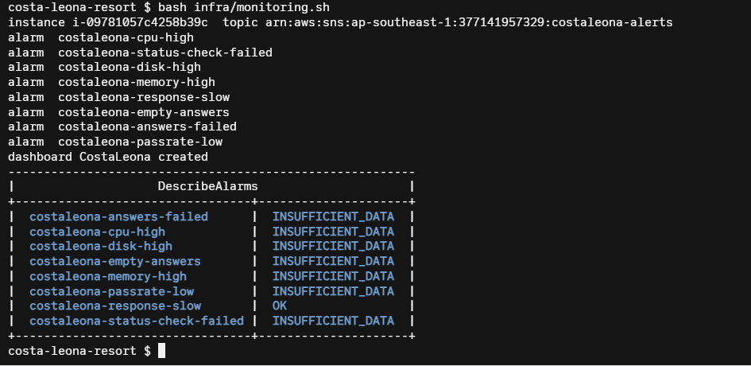

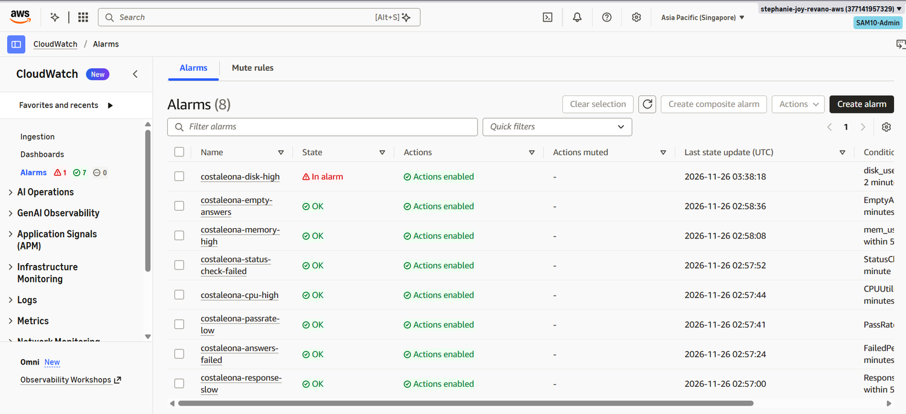
Proof that an alert reached me
This is a real alarm raised by the disk-full fault in the incident: fault at 03:34:44 UTC, alarm at 03:38:18 UTC. I acted on it (fixed at 03:45:29) and the "OK" message followed at 03:47:18.


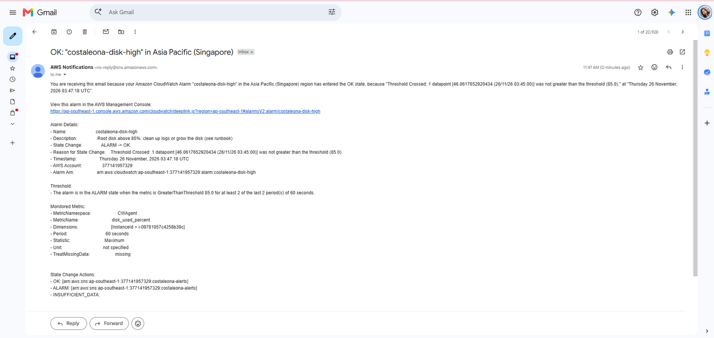
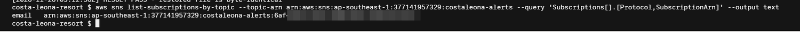
Every alarm tested
Only the disk alarm has fired for a real fault. To prove the e-mail path of the other seven I sent a planned notification test (infra/test_alarms.sh sets each alarm to ALARM with set-alarm-state, labelled as a test, not a fault). Each alarm e-mailed me and then returned to its true state with an OK e-mail.

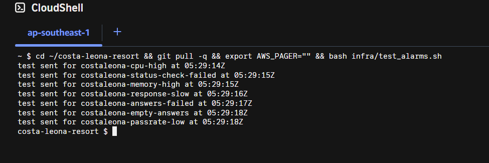

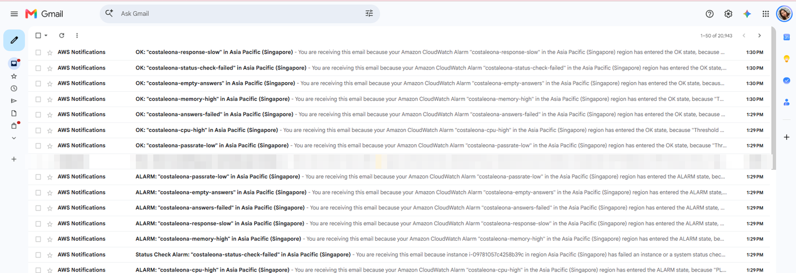
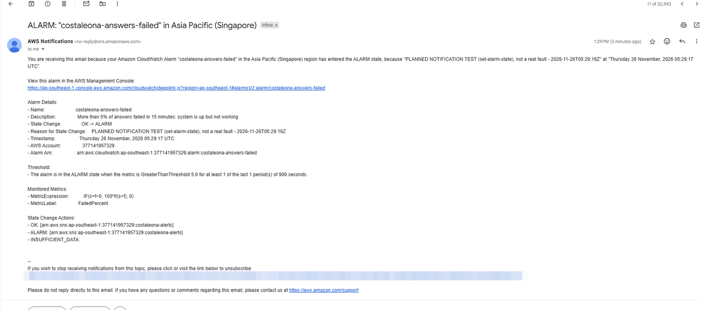
Request log
Every request is one JSON line: time, request id, the question, duration in milliseconds, success, empty, HTTP status, model and application version (release plus a hash of the knowledge base). Log groups for the gateway, LibreChat, MongoDB, the request log and the automation log all have a 14-day retention. Sample (local run, same code):
{"ts": "2026-11-26T02:26:25+0000", "request_id": "8db0af35c237", "question": "What time is check-in?", "duration_ms": 6837, "success": true, "empty": false, "status": 200, "model": "gemini-3.5-flash-lite", "version": "1.0.0+kb.01604f0c", "error": ""}
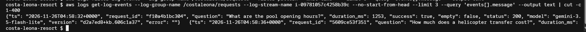
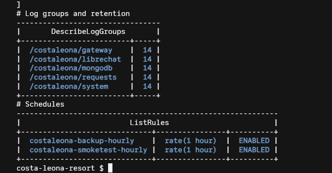
Backup and restore
What would have to be restored
| Item | Where it lives | How it is protected |
|---|---|---|
| Database (users and chats) | MongoDB volume on the instance | Hourly mongodump to S3 (backups/mongo/), kept 14 days (requirement: 7). No RDS is used. |
| S3 content (six documents) | S3 bucket knowledge/ | Versioning enabled; second copy in Git |
| Configuration and secrets | Parameter Store; Git (infra/, compose files) | Everything but the model key is regenerated by deploy.sh; the model key is re-created in Google AI Studio |
| The server itself | EC2, CloudFront, security group, IAM roles | Rebuilt from infra/deploy.sh, not restored |
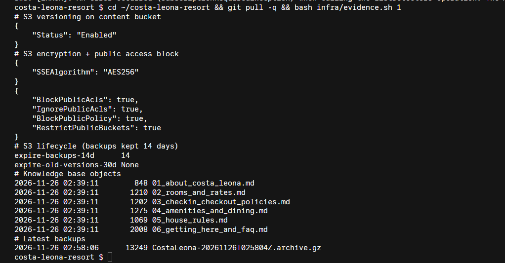
Restore tests
- Database: a fresh backup (14,804 bytes) was taken, an empty MongoDB container started, the backup restored from S3: 65 documents restored, 0 failed. Live and restored counts were identical (users 1, conversations 1, messages 2), and the guest-desk account was present. Restore step 7 s, whole procedure 25 s.
- Content: a document was deleted from S3 (5 of 6 left) and brought back by removing the delete marker; the SHA-256 before and after was identical.

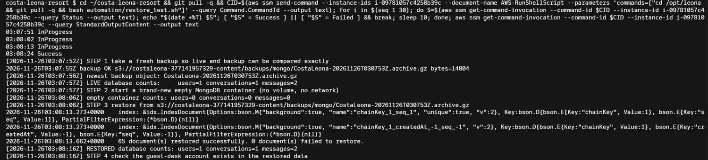

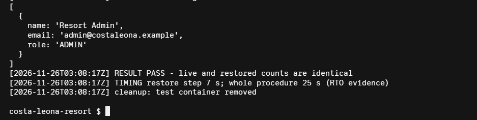
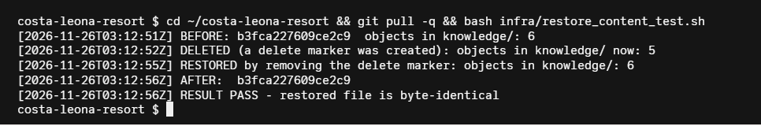
Security
Each control and the risk it addresses
| Control | Risk addressed | Evidence |
|---|---|---|
| MFA on the root user and the IAM user | A stolen password alone cannot open the account. | E-12 |
Own IAM user; admin only by assuming SAM10-AdminRole (MFA required) | No shared or standing administrator login; powerful rights exist only briefly. | E-12 |
| Model key and app secrets in Parameter Store (SecureString), read at runtime | A leaked repository or screenshot never exposes a key; I scanned every git commit for my secret values before the first push (0 hits). | E-13 |
| Only invented data, plus a personal-data check on the request log | Nothing personal can leave the account to the third-party model. Result: 2026-11-26 04:56 UTC: scanned 5 logged questions (the log kept after the incident trim), 0 possible personal-data hits. | E-13 |
| MongoDB has no published port; security group allows only CloudFront on port 80; no SSH | The database is not open to the internet and there is no remote-login door to attack. | E-12 |
Scoped roles: instance role limited to one bucket and /costaleona/*; schedule role limited to tagged instances; model key in its own free-tier project | A compromised component can do only its own job. (Google AI Studio keys have no expiry option, so the key is revocable instead.) | E-12 |
| CloudTrail trail in ap-southeast-1 with log validation | I can see who did what and when. | E-12 |
| Encryption at rest (encrypted EBS volume, S3 AES-256); IMDSv2 required | Stolen disks or snapshots, and metadata-credential theft, give nothing readable. | E-12 |
| Self-sign-up closed on AWS | Strangers cannot burn the free model quota. | repo |

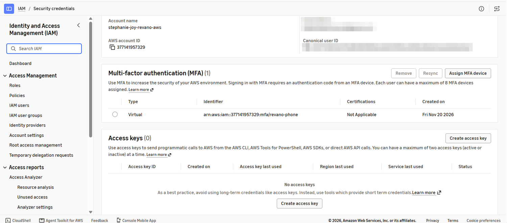

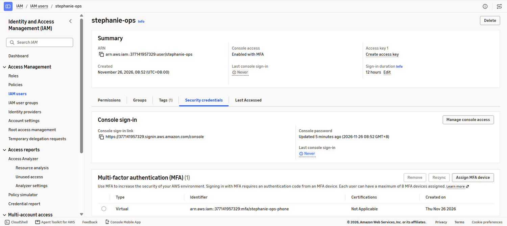

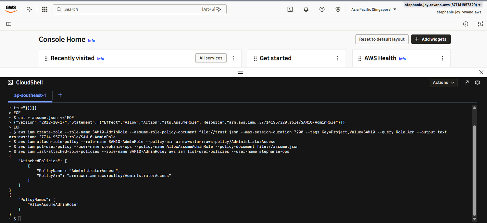

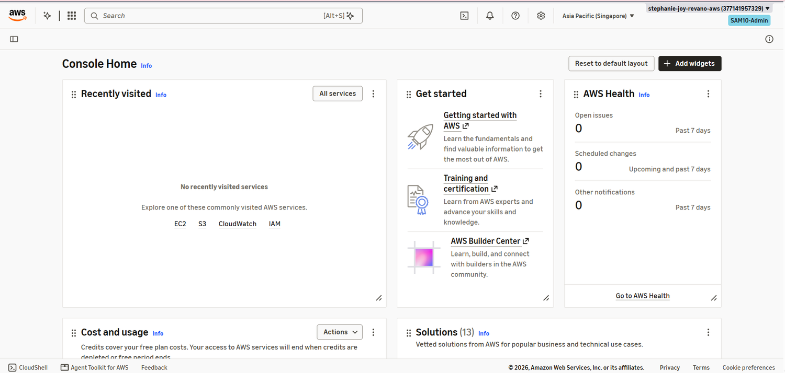
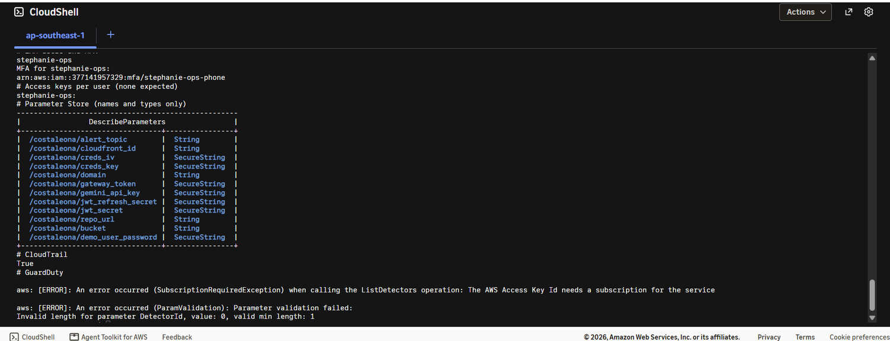
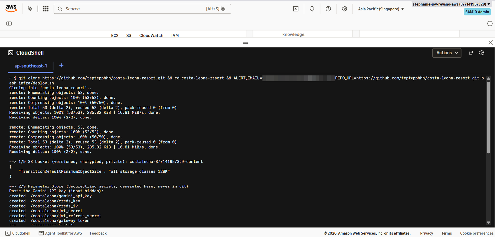
Before and after: problems found and fixed
| Problem found | Before | After |
|---|---|---|
| Secrets in a file | Model key and app secrets in a local .env during development | All in Parameter Store SecureString; repo ignores .env; 0 secret values in git history |
| Setup done as root | Budget, MFA and the admin role were created with the root login | Daily work as an MFA-protected IAM user; admin only through the assumed role; root has MFA and no access keys |
| No audit trail | No trail for this project | CloudTrail logging since 03:04 UTC |
| Unbounded log growth (found in the incident) | Request log grew without limit | logrotate hourly, 100 MB cap, 3 copies |
Known gaps I did not fix: MongoDB without a password inside the private network; plain HTTP between CloudFront and the origin (protected by the prefix-list rule); GuardDuty could not be enabled (the account plan returned SubscriptionRequiredException).
One more thing to know: at start-up, infra/start.sh renders the LibreChat application secrets from Parameter Store into /opt/leona/.env on the instance (mode 600, never in Git). The Gemini key is never written to disk, because the gateway reads it from Parameter Store itself.